import pandas as pd
import numpy as np
from collections import Counter
from sklearn.preprocessing import StandardScaler
from scipy.linalg import svd
import matplotlib.pyplot as plt
from matplotlib.pyplot import figure, plot, xlabel, ylabel, legend, show, clim, semilogx, loglog, title, subplot, grid
from scipy.io import loadmat
import sklearn.linear_model as lm
from sklearn.linear_model import Ridge, LinearRegression, LogisticRegression
from sklearn import model_selection, tree
from scipy import stats
import torch
import seaborn as sns
from toolbox_02450 import feature_selector_lr, bmplot, rlr_validate, train_neural_net
import warnings
warnings.filterwarnings('ignore')
%matplotlib inlineProject 2: South African Heart Disease
Group 22
# Load data from csv and store it in dataframe'
df = pd.read_csv('SAheart.data.txt')Data visualization
Code
# Change variables to integers: Replace absent and present by 0 and 1
df = df.replace('Absent',0)
df = df.replace('Present',1)
df| row.names | sbp | tobacco | ldl | adiposity | famhist | typea | obesity | alcohol | age | chd | |
|---|---|---|---|---|---|---|---|---|---|---|---|
| 0 | 1 | 160 | 12.00 | 5.73 | 23.11 | 1 | 49 | 25.30 | 97.20 | 52 | 1 |
| 1 | 2 | 144 | 0.01 | 4.41 | 28.61 | 0 | 55 | 28.87 | 2.06 | 63 | 1 |
| 2 | 3 | 118 | 0.08 | 3.48 | 32.28 | 1 | 52 | 29.14 | 3.81 | 46 | 0 |
| 3 | 4 | 170 | 7.50 | 6.41 | 38.03 | 1 | 51 | 31.99 | 24.26 | 58 | 1 |
| 4 | 5 | 134 | 13.60 | 3.50 | 27.78 | 1 | 60 | 25.99 | 57.34 | 49 | 1 |
| ... | ... | ... | ... | ... | ... | ... | ... | ... | ... | ... | ... |
| 457 | 459 | 214 | 0.40 | 5.98 | 31.72 | 0 | 64 | 28.45 | 0.00 | 58 | 0 |
| 458 | 460 | 182 | 4.20 | 4.41 | 32.10 | 0 | 52 | 28.61 | 18.72 | 52 | 1 |
| 459 | 461 | 108 | 3.00 | 1.59 | 15.23 | 0 | 40 | 20.09 | 26.64 | 55 | 0 |
| 460 | 462 | 118 | 5.40 | 11.61 | 30.79 | 0 | 64 | 27.35 | 23.97 | 40 | 0 |
| 461 | 463 | 132 | 0.00 | 4.82 | 33.41 | 1 | 62 | 14.70 | 0.00 | 46 | 1 |
462 rows × 11 columns
# Drop row column
df.drop(['row.names'], axis = 'columns', inplace=True) # Create matrix with values
raw_data = df.values
cols = range(0, 9)
X = raw_data[:, cols]
X = np.asarray(X, dtype = np.intc)
attributeNames = np.asarray(df.columns[cols])
classLabels = raw_data[:,-1]
classNames = sorted(set(classLabels))
classDict = dict(zip(classNames,range(len(classNames))))
y = np.array([classDict[cl] for cl in classLabels])
N, M = X.shape
C = len(classNames)Dependent variable
Which attribute is the best suitable for regression analysis?
We use OLS linear regression model. We select one variable to be predicted according to all our other variables in the dataset, and measure the values of the MSE residuals when plotting the estimated data points against the true line of fitting.
criterion_variables = ['sbp', 'tobacco', 'ldl', 'adiposity', 'typea', 'obesity', 'alcohol', 'age','chd','famhist']
# Display plot
plt.figure(figsize=(25,15))
plt.subplots_adjust(wspace = 0.5)
for i in range(10):
attr_col = list(df.columns).index(criterion_variables[i])
cols = list(range(0, attr_col)) + list(range(attr_col + 1, len(df.columns)))
X = raw_data[:, cols]
y = raw_data[:, attr_col] # the 'oldpeak' column
attributeNames = list(df.columns[cols])
N, M = X.shape
X = stats.zscore(X);
# Fit ordinary least squares regression model
model = lm.LinearRegression()
model.fit(X,y)
# Predict thalach
y_est = model.predict(X)
residual = y_est-y
plt.subplot(2, 5, i+1)
plt.plot(y, y, '--r')
plt.plot(y, y_est, '.g')
plt.xlabel('Value of {0} (true)'.format(criterion_variables[i])); ylabel('Value of {0} variable (estimated)'.format(criterion_variables[i]))
plt.legend(['True values', 'Estimated values'], loc = 2);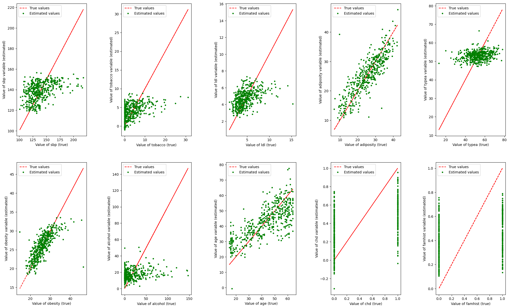
Estimation values of ‘adiposity’, ‘obesity’, and ‘age’ seem to align well with the line of true fit. However ‘obesity’ has lower average MSE residuals overall, so we will choose it as our dependent variable to be estimated using all other dataset attributes.
Feature selection
Can we improve the model by reaching the same prediction power using fewer attributes?
We use feature forward selection with cross-validation across 10 outer folds and 10 inner folds, where we train a model starting with no features and gradually select and add, one-by-one, the features which minimize the squared error in the inner cross-validation loop, until the error cannot be minimized by adding any further predictors. Finally, we compute the R2 value of both the full model without feature selection and the newly-fitted feature-selecting model upon a test set, in order to see what percentage of the variance within the dataset is explained by each model.
raw_data = df.to_numpy()
attr_col = list(df.columns).index('obesity')
cols = list(range(0, attr_col)) + list(range(attr_col + 1, len(df.columns)))
X = raw_data[:, cols]
y = raw_data[:, attr_col] # the 'adiposity' column
attributeNames = list(df.columns[cols])
N, M = X.shape
X = stats.zscore(X)
## Crossvalidation
# Create crossvalidation partition for evaluation
K = 10
CV = model_selection.KFold(n_splits=K,shuffle=True)
# Initialize variables
Features = np.zeros((M,K))
Error_train = np.empty((K,1))
Error_test = np.empty((K,1))
Error_train_fs = np.empty((K,1))
Error_test_fs = np.empty((K,1))
Error_train_nofeatures = np.empty((K,1))
Error_test_nofeatures = np.empty((K,1))
k=0
for train_index, test_index in CV.split(X):
# extract training and test set for current CV fold
X_train = X[train_index,:]
y_train = y[train_index]
X_test = X[test_index,:]
y_test = y[test_index]
internal_cross_validation = 10
# Compute squared error without using the input data at all
Error_train_nofeatures[k] = np.square(y_train-y_train.mean()).sum()/y_train.shape[0]
Error_test_nofeatures[k] = np.square(y_test-y_test.mean()).sum()/y_test.shape[0]
# Compute squared error with all features selected (no feature selection)
m = lm.LinearRegression(fit_intercept=True).fit(X_train, y_train)
Error_train[k] = np.square(y_train-m.predict(X_train)).sum()/y_train.shape[0]
Error_test[k] = np.square(y_test-m.predict(X_test)).sum()/y_test.shape[0]
# Compute squared error with feature subset selection
textout = ''
selected_features, features_record, loss_record = feature_selector_lr(X_train, y_train, internal_cross_validation,display=textout)
Features[selected_features,k] = 1
# .. alternatively you could use module sklearn.feature_selection
if len(selected_features) == 0:
print('No features were selected, i.e. the data (X) in the fold cannot describe the outcomes (y).' )
else:
m = lm.LinearRegression(fit_intercept=True).fit(X_train[:,selected_features], y_train)
Error_train_fs[k] = np.square(y_train-m.predict(X_train[:,selected_features])).sum()/y_train.shape[0]
Error_test_fs[k] = np.square(y_test-m.predict(X_test[:,selected_features])).sum()/y_test.shape[0]
figure(k)
subplot(1,2,1)
plot(range(1,len(loss_record)), loss_record[1:])
xlabel('Iteration')
ylabel('Squared error (crossvalidation)')
subplot(1,3,3)
bmplot(attributeNames, range(1,features_record.shape[1]), -features_record[:,1:])
clim(-1.5,0)
xlabel('Iteration')
#print('Cross validation fold {0}/{1}'.format(k+1,K))
#print('Train indices: {0}'.format(train_index))
#print('Test indices: {0}'.format(test_index))
#print('Features no: {0}\n'.format(selected_features.size))
k+=1
# Display results
print('Linear regression without feature selection:')
print('- Training error: {0}'.format(Error_train.mean()))
print('- Test error: {0}'.format(Error_test.mean()))
print('- R^2 train: {0}'.format((Error_train_nofeatures.sum()-Error_train.sum())/Error_train_nofeatures.sum()))
print('- R^2 test: {0}'.format((Error_test_nofeatures.sum()-Error_test.sum())/Error_test_nofeatures.sum()))
print('\n')
print('Linear regression with feature selection:')
print('- Training error: {0}'.format(Error_train_fs.mean()))
print('- Test error: {0}'.format(Error_test_fs.mean()))
print('- R^2 train: {0}'.format((Error_train_nofeatures.sum()-Error_train_fs.sum())/Error_train_nofeatures.sum()))
print('- R^2 test: {0}'.format((Error_test_nofeatures.sum()-Error_test_fs.sum())/Error_test_nofeatures.sum()))
figure(k)
subplot(1,3,2)
bmplot(attributeNames, range(1,Features.shape[1]+1), -Features)
clim(-1.5,0)
xlabel('Crossvalidation fold')
ylabel('Attribute')Linear regression without feature selection:
- Training error: 7.676131475685457
- Test error: 8.104654216746123
- R^2 train: 0.5666276636565277
- R^2 test: 0.5337053644554508
Linear regression with feature selection:
- Training error: 7.7469134976404685
- Test error: 8.109273625721451
- R^2 train: 0.5626315139914363
- R^2 test: 0.5334395905474004Text(0, 0.5, 'Attribute')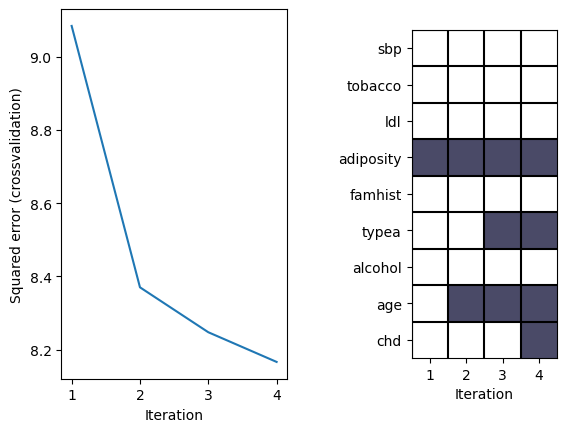
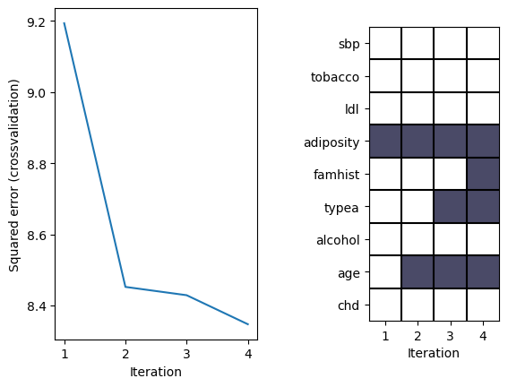
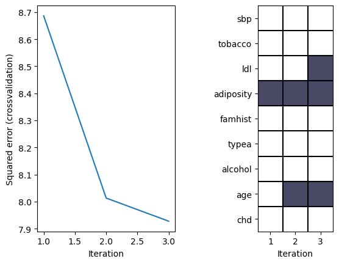
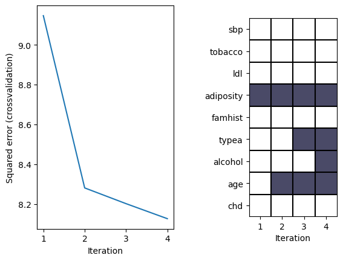
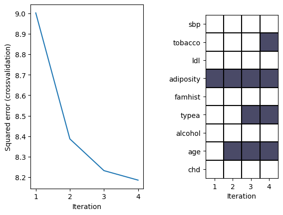
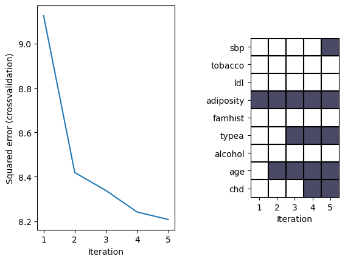
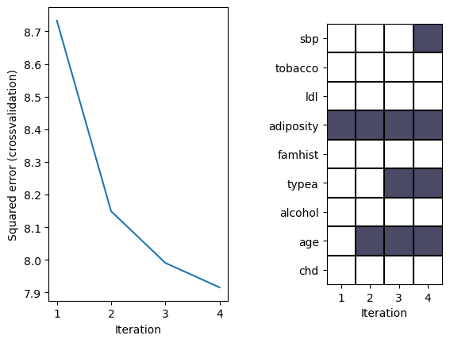
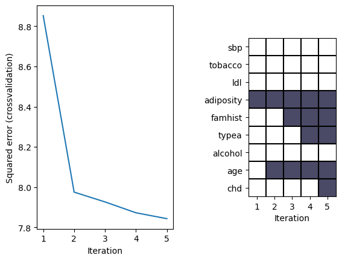
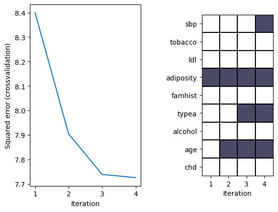
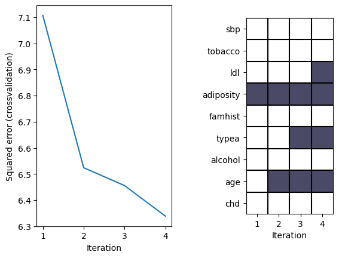
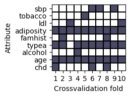
From the forward selection algorithm, we can see that our dependent variable ‘obesity’ is best described using the features: ‘adiposity’, ‘typea’ and ‘age’, while many other variables have been left out completely from our model, due to the low assistance in further reducing the MSE of the estimates.
However, as can be seen in the table, the R2 value in the test set of both models is similar, representing a variance of ~54%, suggesting that feature selection does not have an optimising impact on our regression model, and may even slightly increase the MSE. This means that, although the criterion is largely predicted by only a few attributes, the full model definitely does not over-fit the data and even terms that have a very low correlation will help to reduce the MSE.
# Inspect selected feature coefficients effect on the entire dataset
# and plot the fitted model residual error as function of each attribute
# to inspect for systematic structure in the residual
f=2 # cross-validation fold to inspect
ff=Features[:,f-1].nonzero()[0]
print(ff)
if len(ff) == 0:
print('\nNo features were selected, i.e. the data (X) in the fold cannot describe the outcomes (y).' )
else:
m = lm.LinearRegression(fit_intercept=True).fit(X[:,ff], y)
y_est= m.predict(X[:,ff])
residual=y-y_est
figure(k+1, figsize=(12,6))
title('Residual error vs. Attributes for features selected in cross-validation fold {0}'.format(f))
for i in range(0,len(ff)):
subplot(4, int( np.ceil(len(ff) // 2)),i+1)
plot(X[:,ff[i]],residual,'.')
xlabel(attributeNames[ff[i]])
ylabel('residual error')
plt.tight_layout()
show()[3 4 5 7]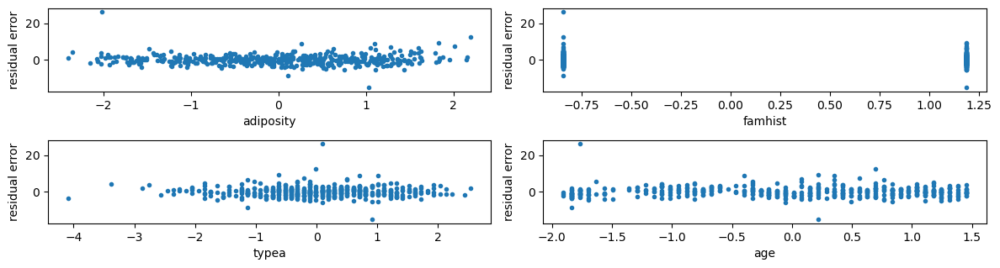
Regularization
Here we introduce a regularization parameter λ into the linear regression, which will take values between \(10^-3\) and \(10^7\) because we want to obtain the lowest possible generalization error when using our linear regression model.
In order to reliably estimate the generalization error for different values of λ, we have performed two-level cross-validation testing, with the outer layer having K1 = 10 folds and the inner fold being selected to K2 = 10 folds.
# Add offset attribute
X = np.concatenate((np.ones((X.shape[0],1)),X),1)
attributeNames= [u'Offset']+attributeNames
M = M+1
attributeNames['Offset',
'sbp',
'tobacco',
'ldl',
'adiposity',
'famhist',
'typea',
'alcohol',
'age',
'chd']## Crossvalidation
# Create crossvalidation partition for evaluation
K = 10
CV = model_selection.KFold(K, shuffle=True)
#CV = model_selection.KFold(K, shuffle=False)
# Values of lambda
lambdas = np.power(10.,range(-5,9))
# Initialize variables
#T = len(lambdas)
Error_train = np.empty((K,1))
Error_test = np.empty((K,1))
Error_train_rlr = np.empty((K,1))
Error_test_rlr = np.empty((K,1))
Error_train_nofeatures = np.empty((K,1))
Error_test_nofeatures = np.empty((K,1))
val_error_lambdas = np.empty((K,len(lambdas)))
w_rlr = np.empty((M,K))
mu = np.empty((K, M-1))
sigma = np.empty((K, M-1))
w_noreg = np.empty((M,K))
k=0
for train_index, test_index in CV.split(X,y):
# extract training and test set for current CV fold
X_train = X[train_index]
y_train = y[train_index]
X_test = X[test_index]
y_test = y[test_index]
internal_cross_validation = 10
opt_val_err, opt_lambda, mean_w_vs_lambda, train_err_vs_lambda, test_err_vs_lambda = rlr_validate(X_train, y_train, lambdas, internal_cross_validation)
val_error_lambdas[k] = test_err_vs_lambda
# Standardize outer fold based on training set, and save the mean and standard
# deviations since they're part of the model (they would be needed for
# making new predictions) - for brevity we won't always store these in the scripts
mu[k, :] = np.mean(X_train[:, 1:], 0)
sigma[k, :] = np.std(X_train[:, 1:], 0)
X_train[:, 1:] = (X_train[:, 1:] - mu[k, :] ) / sigma[k, :]
X_test[:, 1:] = (X_test[:, 1:] - mu[k, :] ) / sigma[k, :]
Xty = X_train.T @ y_train
XtX = X_train.T @ X_train
# Compute mean squared error without using the input data at all
Error_train_nofeatures[k] = np.square(y_train-y_train.mean()).sum(axis=0)/y_train.shape[0]
Error_test_nofeatures[k] = np.square(y_test-y_test.mean()).sum(axis=0)/y_test.shape[0]
# Estimate weights for the optimal value of lambda, on entire training set
lambdaI = opt_lambda * np.eye(M)
lambdaI[0,0] = 0 # Do no regularize the bias term
w_rlr[:,k] = np.linalg.solve(XtX+lambdaI,Xty).squeeze()
# Compute mean squared error with regularization with optimal lambda
Error_train_rlr[k] = np.square(y_train-X_train @ w_rlr[:,k]).sum(axis=0)/y_train.shape[0]
Error_test_rlr[k] = np.square(y_test-X_test @ w_rlr[:,k]).sum(axis=0)/y_test.shape[0]
# Estimate weights for unregularized linear regression, on entire training set
w_noreg[:,k] = np.linalg.solve(XtX,Xty).squeeze()
# Compute mean squared error without regularization
Error_train[k] = np.square(y_train-X_train @ w_noreg[:,k]).sum(axis=0)/y_train.shape[0]
Error_test[k] = np.square(y_test-X_test @ w_noreg[:,k]).sum(axis=0)/y_test.shape[0]
# OR ALTERNATIVELY: you can use sklearn.linear_model module for linear regression:
#m = lm.LinearRegression().fit(X_train, y_train)
#Error_train[k] = np.square(y_train-m.predict(X_train)).sum()/y_train.shape[0]
#Error_test[k] = np.square(y_test-m.predict(X_test)).sum()/y_test.shape[0]
# Display the results for the last cross-validation fold
if k == K-1:
figure(k, figsize=(12,8))
subplot(1,2,1)
semilogx(lambdas,mean_w_vs_lambda.T[:,1:],'.-') # Don't plot the bias term
xlabel('Regularization factor')
ylabel('Mean Coefficient Values')
grid()
# You can choose to display the legend, but it's omitted for a cleaner
# plot, since there are many attributes
legend(attributeNames[1:], loc='best')
subplot(1,2,2)
title('Optimal lambda: 1e{0}'.format(np.log10(opt_lambda)))
loglog(lambdas,train_err_vs_lambda.T,'b.-',lambdas,test_err_vs_lambda.T,'r.-')
xlabel('Regularization factor')
ylabel('Squared error (crossvalidation)')
legend(['Train error','Validation error'])
grid()
# To inspect the used indices, use these print statements
#print('Cross validation fold {0}/{1}:'.format(k+1,K))
#print('Train indices: {0}'.format(train_index))
#print('Test indices: {0}\n'.format(test_index))
k+=1
plt.tight_layout()
show()
# Display results
print('Linear regression without feature selection:')
print('- Training error: {0}'.format(Error_train.mean()))
print('- Test error: {0}'.format(Error_test.mean()))
print('- R^2 train: {0}'.format((Error_train_nofeatures.sum()-Error_train.sum())/Error_train_nofeatures.sum()))
print('- R^2 test: {0}\n'.format((Error_test_nofeatures.sum()-Error_test.sum())/Error_test_nofeatures.sum()))
print('Regularized linear regression:')
print('- Training error: {0}'.format(Error_train_rlr.mean()))
print('- Test error: {0}'.format(Error_test_rlr.mean()))
print('- R^2 train: {0}'.format((Error_train_nofeatures.sum()-Error_train_rlr.sum())/Error_train_nofeatures.sum()))
print('- R^2 test: {0}\n'.format((Error_test_nofeatures.sum()-Error_test_rlr.sum())/Error_test_nofeatures.sum()))
print('Weights in last fold:')
for m in range(M):
print('{:>15} {:>15}'.format(attributeNames[m], np.round(w_rlr[m,-1],2)))
print('Generalization error for different values of lambda:')
for i in range(len(lambdas)):
print('{:>20} {:>20}'.format(float(lambdas[i]), str(np.round(val_error_lambdas.mean(axis = 0)[i],2))))<Figure size 640x480 with 0 Axes>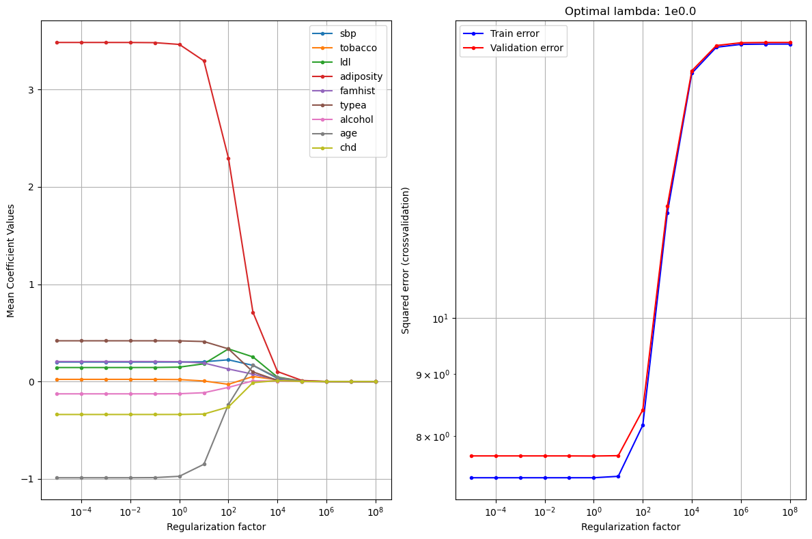
Linear regression without feature selection:
- Training error: 7.680674622271397
- Test error: 8.020988394051368
- R^2 train: 0.5664245683319278
- R^2 test: 0.5433320689535166
Regularized linear regression:
- Training error: 7.680865193377744
- Test error: 8.019454576648586
- R^2 train: 0.5664138105594974
- R^2 test: 0.5434193955005107
Weights in last fold:
Offset 26.05
sbp 0.2
tobacco 0.02
ldl 0.15
adiposity 3.47
famhist 0.2
typea 0.42
alcohol -0.12
age -0.97
chd -0.34
Generalization error for different values of lambda:
1e-05 8.05
0.0001 8.05
0.001 8.05
0.01 8.05
0.1 8.05
1.0 8.05
10.0 8.06
100.0 8.82
1000.0 13.04
10000.0 16.89
100000.0 17.72
1000000.0 17.82
10000000.0 17.83
100000000.0 17.83The model shows the typical trend of the generalisation error falling and then growing as λ increases. The lowest error is obtained when λ=1, hence that is the optimal value for our regularization parameter.
When selecting this parameter we reach the best trade-off between bias and variance. If we had chosen a smaller λ value, the variance would be higher and the bias smaller, thus producing underfitting; whereas if we had set a higher value, the opposite would have happened, leading to overfitting.
Now we want to find the equation of the regularized linear regresion in order to know how each atribute contributes to the prediction of the obesity
raw_data = df.to_numpy()
attr_col = list(df.columns).index('obesity')
cols = list(range(0, attr_col)) + list(range(attr_col + 1, len(df.columns)))
X = raw_data[:, cols]
y = raw_data[:, attr_col]
attributeNames = list(df.columns[cols])
N, M = X.shape
X = stats.zscore(X)
ridgereg_model = Ridge(alpha = 10, fit_intercept = True).fit(X, y)
linreg_model = LinearRegression(fit_intercept = True).fit(X, y)
print('Weights for LinReg model with regularization:')
print('{:>20} {:>20}'.format('Intercept', str(np.round(ridgereg_model.intercept_,2))))
for m in range(M):
print('{:>20} {:>20}'.format(attributeNames[m], str(np.round(ridgereg_model.coef_[m],2))))
print()
print()
print('Weights for LinReg model without regularization:')
print('{:>20} {:>20}'.format('Intercept', str(np.round(linreg_model.intercept_,2))))
for m in range(M):
print('{:>20} {:>20}'.format(attributeNames[m], str(np.round(linreg_model.coef_[m],2))))
Weights for LinReg model with regularization:
Intercept 26.04
sbp 0.17
tobacco -0.04
ldl 0.16
adiposity 3.45
famhist 0.09
typea 0.39
alcohol -0.05
age -0.9
chd -0.24
Weights for LinReg model without regularization:
Intercept 26.04
sbp 0.16
tobacco -0.03
ldl 0.12
adiposity 3.61
famhist 0.09
typea 0.39
alcohol -0.06
age -1.01
chd -0.24From this values we can say that a person with high values for sbp, ldl, adiposity, famhist, typea and age; and low values for tobacco, alcohol and chd will be more obese. Conversely, if the values of the variables sbp, ldl, adiposity, famhist, typea and ageare low; and the values of tobacco, alcohol and chd are high, the person will be thinner.
Comparison of the 3 models
Two-level cross-validation with K1 = K2 = 10 outer and inner folds. The inner folds are used to calculate, for each model, a complexity control parameter (λ and number of hidden layers) that minimises the generalisation error for that model, and the outer folds to test model performance.
We use the Setup I (training set is fixed): paired -test. Then, we calculate the 1- α confidence interval and the p-value.
raw_data = df.to_numpy()
attr_col = list(df.columns).index('obesity')
cols = list(range(0, attr_col)) + list(range(attr_col + 1, len(df.columns)))
X = raw_data[:, cols]
y = raw_data[:, attr_col]
attributeNames = list(df.columns[cols])
N, M = X.shape
K1 = 10 # for model selection
K2 = 10 # for optimal parameter selection
# K-fold crossvalidation
CV1 = model_selection.KFold(n_splits=K1, shuffle=True)
X = stats.zscore(X)
# Initialize variable
linreg_test_error_k1 = np.zeros(K1)
ann_test_error_k1 = np.zeros(K1)
baseline_test_error_k1 = np.zeros(K1)
k1=0
for par_index, test_index in CV1.split(X):
print('Computing CV1 fold: {0}/{1}..'.format(k1+1,K1))
print()
# extract training and test set for current CV fold
X_par, y_par = X[par_index,:], y[par_index]
X_test, y_test = X[test_index,:], y[test_index]
CV2 = model_selection.KFold(n_splits=K2, shuffle=False)
# Regularized Linear Regression---------------------------------------------------------------------------------
lambda_interval = np.power(10.,range(-5,9))
linreg_gen_error_rate_s = np.zeros(len(lambda_interval))
for s in range(0, len(lambda_interval)):
k2 = 0
linreg_val_error_rate = np.zeros(K2)
for train_index, val_index in CV2.split(X_par):
# extract training and test set for current CV fold
X_train, y_train = X_par[train_index,:], y_par[train_index]
X_val, y_val = X_par[val_index,:], y_par[val_index]
linreg_model = Ridge(alpha = lambda_interval[s], fit_intercept = True)
linreg_model = linreg_model.fit(X_train, y_train)
linreg_y_val_estimated = linreg_model.predict(X_val).T
linreg_val_error_rate[k2] = np.square(y_val - linreg_y_val_estimated).sum() / len(y_val)
k2 = k2 + 1
linreg_gen_error_rate_s[s] = np.sum(linreg_val_error_rate) / len(linreg_val_error_rate)
linreg_min_error = np.min(linreg_gen_error_rate_s)
opt_lambda_index = np.argmin(linreg_gen_error_rate_s)
opt_lambda = lambda_interval[opt_lambda_index]
linreg_model = Ridge(alpha = lambda_interval[opt_lambda_index], fit_intercept = True)
linreg_model = linreg_model.fit(X_par, y_par)
linreg_y_test_estimated = linreg_model.predict(X_test).T
linreg_test_error_k1[k1] = np.square(y_test - linreg_y_test_estimated).sum() / len(y_test)
print('Error rate - regularized lin-reg - CV1 fold {0}/{1}: {2}'.format(k1+1, K1, np.round(linreg_test_error_k1[k1], decimals = 2)))
print('Optimal lambda: {0}'.format(opt_lambda))
# ANN Regression -----------------------------------------------------------------------------------------------
h_unit_interval = np.arange(1, 4, 1) # number of hidden units in the single hidden layer
nr_of_nn_replicates = 3 # when finding loss, take the best neural network from n replicates (to deal with local minima issues)
max_iter = 10000 # max nr. of epochs (if convergence is not yet reached)
ann_gen_error_rate_s = np.zeros(len(h_unit_interval))
for s in range(0, len(h_unit_interval)):
k2 = 0
ann_val_error_rate = np.zeros(K2)
for train_index, val_index in CV2.split(X_par):
#print('hello')
ann_model = lambda: torch.nn.Sequential(
torch.nn.Linear(M, h_unit_interval[s]),
torch.nn.Tanh(),
torch.nn.Linear(h_unit_interval[s], 1), # H hidden units to 1 output neuron
# no final tranfer function, since we are interested in the "linear output"
)
#extract training and test set for current CV fold
X_train = torch.tensor(X_par[train_index,:], dtype=torch.float)
y_train = torch.tensor(y_par[train_index], dtype=torch.float)
X_val = torch.tensor(X_par[val_index,:], dtype=torch.float)
y_val = torch.tensor(y_par[val_index], dtype=torch.float)
loss_fn = torch.nn.MSELoss() # Mean squared error loss function
best_trained_neural_net, final_loss, learning_curve = train_neural_net(ann_model, loss_fn, X = X_train, y = y_train, n_replicates = nr_of_nn_replicates, max_iter = max_iter)
ann_y_val_estimated = best_trained_neural_net(X_val)
# Convert tensors to numpy arrays, to work smoothly with class comparisons
ann_y_val_estimated = ann_y_val_estimated.detach().numpy().reshape(len(ann_y_val_estimated))
y_val = y_val.numpy().reshape(len(y_val))
ann_val_error_rate[k2] = np.square(y_val - ann_y_val_estimated).sum() / len(y_val)
k2 = k2 + 1
ann_gen_error_rate_s[s] = np.sum(ann_val_error_rate) / len(ann_val_error_rate)
ann_min_error = np.min(ann_gen_error_rate_s)
opt_nr_h_units_index = np.argmin(ann_gen_error_rate_s)
opt_nr_h_units = h_unit_interval[opt_nr_h_units_index]
tensor_X_par = torch.tensor(X_par, dtype=torch.float)
tensor_y_par = torch.tensor(y_par, dtype=torch.float)
tensor_X_test = torch.tensor(X_test, dtype=torch.float)
ann_model = lambda: torch.nn.Sequential(
torch.nn.Linear(M, h_unit_interval[opt_nr_h_units_index]),
torch.nn.Tanh(),
torch.nn.Linear(h_unit_interval[opt_nr_h_units_index], 1), # H hidden units to 1 output neuron
# no final tranfer function, since we are interested in the "linear output"
)
loss_fn = torch.nn.MSELoss() # Binary classification loss
best_trained_neural_net, final_loss, learning_curve = train_neural_net(ann_model, loss_fn, X = tensor_X_par, y = tensor_y_par, n_replicates = nr_of_nn_replicates, max_iter = max_iter)
ann_y_test_estimated = best_trained_neural_net(tensor_X_test)
# Convert tensors to numpy arrays, to work smoothly with class comparisons
ann_y_test_estimated = ann_y_test_estimated.detach().numpy().reshape(len(ann_y_test_estimated))
ann_test_error_k1[k1] = np.square(y_test - ann_y_test_estimated).sum() / len(y_test)
print('Error rate - Regression ANN - CV1 fold {0}/{1}: {2}'.format(k1+1, K1, np.round(ann_test_error_k1[k1], decimals = 2)))
print('Optimal number of hidden units: {0}'.format(opt_nr_h_units))
# Baseline - LinearRegression ---------------------------------------------------------------------------------
baseline_test_error_k1[k1] = np.square(y_test - y_par.mean()).sum() / len(y_test)
print('Error rate - baseline lin-reg - CV1 fold {0}/{1}: {2}'.format(k1+1, K1, np.round(baseline_test_error_k1[k1], decimals = 2)))
k1 = k1 + 1
print()
print()
# Statistical evaluation of models
plt.figure(figsize = [18, 5])
plt.subplots_adjust(wspace = 0.4)
z = (ann_test_error_k1 - linreg_test_error_k1)
z_mean = z.mean()
deg_f = K1-1
sig = (z - z_mean).std() / np.sqrt(deg_f)
alpha = 0.05
zL = z_mean + sig * stats.t.ppf(alpha/2, deg_f);
zH = z_mean + sig * stats.t.ppf(1-alpha/2, deg_f);
plt.subplot(1, 3, 1)
plt.boxplot(np.concatenate((ann_test_error_k1.reshape((len(ann_test_error_k1), 1)), linreg_test_error_k1.reshape((len(linreg_test_error_k1), 1))), axis = 1))
plt.xlabel('Regression ANN vs. Regularized Linear Regression')
plt.ylabel('Cross-validation error')
print('Credibility interval has z-scores: ({0}, {1})'.format(np.round(zL, decimals = 2), np.round(zH, decimals = 2)))
if zL <= 0 and zH >= 0 :
print('Regression ANN and regularized lin-reg are NOT significantly different')
else:
print('Regression ANN and regularized lin-reg are significantly different.')
print()
print()
z = (ann_test_error_k1 - baseline_test_error_k1)
z_mean = z.mean()
deg_f = K1-1
sig = (z - z_mean).std() / np.sqrt(deg_f)
alpha = 0.05
zL = z_mean + sig * stats.t.ppf(alpha/2, deg_f);
zH = z_mean + sig * stats.t.ppf(1-alpha/2, deg_f);
plt.subplot(1, 3, 2)
plt.boxplot(np.concatenate((ann_test_error_k1.reshape((len(ann_test_error_k1), 1)), baseline_test_error_k1.reshape((len(baseline_test_error_k1), 1))), axis = 1))
plt.xlabel('Regression ANN vs. Baseline-form Linear Regression')
plt.ylabel('Cross-validation error')
print('Credibility interval has z-scores: ({0}, {1})'.format(np.round(zL, decimals = 2), np.round(zH, decimals = 2)))
if zL <= 0 and zH >= 0 :
print('Regression ANN and baseline lin-reg classifiers are NOT significantly different')
else:
print('Regression ANN and baseline lin-reg classifiers are significantly different.')
print()
print()
z = (linreg_test_error_k1 - baseline_test_error_k1)
z_mean = z.mean()
deg_f = K1-1
sig = (z - z_mean).std() / np.sqrt(deg_f)
alpha = 0.05
zL = z_mean + sig * stats.t.ppf(alpha/2, deg_f);
zH = z_mean + sig * stats.t.ppf(1-alpha/2, deg_f);
plt.subplot(1, 3, 3)
plt.boxplot(np.concatenate((linreg_test_error_k1.reshape((len(linreg_test_error_k1), 1)), baseline_test_error_k1.reshape((len(baseline_test_error_k1), 1))), axis = 1))
plt.xlabel('Regularized Linear Regression vs. Baseline-form Linear Regression')
plt.ylabel('Cross-validation error')
print('Credibility interval has z-scores: ({0}, {1})'.format(np.round(zL, decimals = 2), np.round(zH, decimals = 2)))
if zL <= 0 and zH >= 0 :
print('Regularized lin-reg and baseline lin-reg cla ssifiers are NOT significantly different')
else:
print('Regularized lin-reg and baseline lin-reg classifiers are significantly different.')
print()
print()
# Generalized error rates
gen_error_regularized_linreg = np.sum(linreg_test_error_k1) / len(linreg_test_error_k1)
gen_error_ann = np.sum(ann_test_error_k1) / len(ann_test_error_k1)
gen_error_baseline_linreg = np.sum(baseline_test_error_k1) / len(baseline_test_error_k1)
print('Generalized error rate - regularized lin-reg: {0}'.format(np.round(gen_error_regularized_linreg, decimals = 2)))
print('Generalized error rate - regression ANN: {0}'.format(np.round(gen_error_ann, decimals = 2)))
print('Generalized error rate - baseline lin-reg: {0}'.format(np.round(gen_error_baseline_linreg, decimals = 2)))Computing CV1 fold: 1/10..
Error rate - regularized lin-reg - CV1 fold 1/10: 9.93
Optimal lambda: 1.0
Error rate - Regression ANN - CV1 fold 1/10: 19.7
Optimal number of hidden units: 3
Error rate - baseline lin-reg - CV1 fold 1/10: 19.63
Computing CV1 fold: 2/10..
Error rate - regularized lin-reg - CV1 fold 2/10: 6.74
Optimal lambda: 1.0
Error rate - Regression ANN - CV1 fold 2/10: 11.9
Optimal number of hidden units: 3
Error rate - baseline lin-reg - CV1 fold 2/10: 11.79
Computing CV1 fold: 3/10..
Error rate - regularized lin-reg - CV1 fold 3/10: 5.38
Optimal lambda: 1.0
Error rate - Regression ANN - CV1 fold 3/10: 11.17
Optimal number of hidden units: 3
Error rate - baseline lin-reg - CV1 fold 3/10: 11.22
Computing CV1 fold: 4/10..
Error rate - regularized lin-reg - CV1 fold 4/10: 5.37
Optimal lambda: 1.0
Error rate - Regression ANN - CV1 fold 4/10: 10.81
Optimal number of hidden units: 3
Error rate - baseline lin-reg - CV1 fold 4/10: 10.9
Computing CV1 fold: 5/10..
Error rate - regularized lin-reg - CV1 fold 5/10: 8.78
Optimal lambda: 1.0
Error rate - Regression ANN - CV1 fold 5/10: 26.12
Optimal number of hidden units: 3
Error rate - baseline lin-reg - CV1 fold 5/10: 25.99
Computing CV1 fold: 6/10..
Error rate - regularized lin-reg - CV1 fold 6/10: 5.42
Optimal lambda: 1.0
Error rate - Regression ANN - CV1 fold 6/10: 14.16
Optimal number of hidden units: 3
Error rate - baseline lin-reg - CV1 fold 6/10: 14.18
Computing CV1 fold: 7/10..
Error rate - regularized lin-reg - CV1 fold 7/10: 4.8
Optimal lambda: 1.0
Error rate - Regression ANN - CV1 fold 7/10: 11.87
Optimal number of hidden units: 3
Error rate - baseline lin-reg - CV1 fold 7/10: 11.88
Computing CV1 fold: 8/10..
Error rate - regularized lin-reg - CV1 fold 8/10: 9.71
Optimal lambda: 1.0
Error rate - Regression ANN - CV1 fold 8/10: 29.91
Optimal number of hidden units: 3
Error rate - baseline lin-reg - CV1 fold 8/10: 29.87
Computing CV1 fold: 9/10..
Error rate - regularized lin-reg - CV1 fold 9/10: 18.64
Optimal lambda: 1.0
Error rate - Regression ANN - CV1 fold 9/10: 25.1
Optimal number of hidden units: 3
Error rate - baseline lin-reg - CV1 fold 9/10: 25.22
Computing CV1 fold: 10/10..
Error rate - regularized lin-reg - CV1 fold 10/10: 5.25
Optimal lambda: 1.0
Error rate - Regression ANN - CV1 fold 10/10: 17.3
Optimal number of hidden units: 3
Error rate - baseline lin-reg - CV1 fold 10/10: 17.31
Credibility interval has z-scores: (6.06, 13.55)
Regression ANN and regularized lin-reg are significantly different.
Credibility interval has z-scores: (-0.05, 0.06)
Regression ANN and baseline lin-reg classifiers are NOT significantly different
Credibility interval has z-scores: (-13.51, -6.08)
Regularized lin-reg and baseline lin-reg classifiers are significantly different.
Generalized error rate - regularized lin-reg: 8.0
Generalized error rate - regression ANN: 17.8
Generalized error rate - baseline lin-reg: 17.8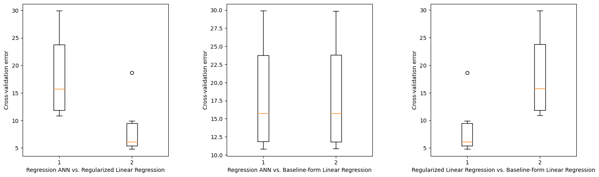
The best model for our dataset is the regularized linear regression as it achieves the lowest error.
The optimal λ is 1 as obtained in the previous exercise and the best number of hidden layers is 3.
# Statistical comparison of models
# Compute confidence interval of z = zA-zB and p-value of Null hypothesis
alpha = 0.05
# ANN vs. regularized linear regression
z1 = (ann_test_error_k1 - linreg_test_error_k1)
CI1 = stats.t.interval(1-alpha, len(z1)-1, loc=np.mean(z1), scale=stats.sem(z1)) # Confidence interval
p1 = 2*stats.t.cdf(-np.abs( np.mean(z1) )/stats.sem(z1), df=len(z1)-1) # p-value
print('ANN vs. regularized linear regression')
print('Confidence interval:', CI1)
print('p-value:', p1)
print()
# ANN vs. baseline
z2 = (ann_test_error_k1 - baseline_test_error_k1)
CI2 = stats.t.interval(1-alpha, len(z2)-1, loc=np.mean(z2), scale=stats.sem(z2)) # Confidence interval
p2 = 2*stats.t.cdf(-np.abs( np.mean(z2) )/stats.sem(z2), df=len(z2)-1) # p-value
print('ANN vs. baseline')
print('Confidence interval:', CI2)
print('p-value:', p2)
print()
# regularized linear regression vs. baseline
z3 = (linreg_test_error_k1 - baseline_test_error_k1)
CI3 = stats.t.interval(1-alpha, len(z3)-1, loc=np.mean(z3), scale=stats.sem(z3)) # Confidence interval
p3 = 2*stats.t.cdf( -np.abs( np.mean(z3) )/stats.sem(z3), df=len(z3)-1) # p-value
print('Regularized linear regression vs. baseline')
print('Confidence interval:', CI3)
print('p-value:', p3)ANN vs. regularized linear regression
Confidence interval: (6.057463143680125, 13.545235443619362)
p-value: 0.00022284981919282824
ANN vs. baseline
Confidence interval: (-0.05424606240787217, 0.06419466703832133)
p-value: 0.8535153425885907
Regularized linear regression vs. baseline
Confidence interval: (-13.51169331642087, -6.0810566662481715)
p-value: 0.00021146298100565937The confidence intervals of the ANN and baseline models coincide, which means that there is no difference between the metrics and, in fact, the generalised error rate is the same. However, if we compare the intervals of these two models with that of the regularised linear regression, we can see that there is no overlap and therefore the difference between the metrics is statistically significant.
Classification Models
Classification Models
For classification, we have chosen to solve the models predicting whether or not the patient suffers of coronary hear disease (i.e. if the variable ‘chd’ is either 0 or 1), by using the rest of our attributes, and again standardizing the values for better results.
raw_data = df.to_numpy()
attr_col = list(df.columns).index('chd')
cols = list(range(0, attr_col)) + list(range(attr_col + 1, len(df.columns)))
X = raw_data[:, cols]
y = raw_data[:, attr_col] # the 'target' column
attributeNames = list(df.columns[cols])
classLabels = raw_data[:, -1]
classNames = np.unique(classLabels)
N, M = X.shape
C = len(classNames)
K1 = 10 # for model selection
K2 = 10 # for optimal parameter selection
# K-fold crossvalidation
CV1 = model_selection.KFold(n_splits=K1, shuffle=True)
X = stats.zscore(X)
# Initialize variable
logreg_test_error_k1 = np.zeros(K1)
# tree_test_error_k1 = np.zeros(K1)
ann_test_error_k1 = np.zeros(K1)
baseline_test_error_k1 = np.zeros(K1)
k1=0for par_index, test_index in CV1.split(X):
print('Computing CV1 fold: {0}/{1}..'.format(k1+1,K1))
print()
# extract training and test set for current CV fold
X_par, y_par = X[par_index,:], y[par_index]
X_test, y_test = X[test_index,:], y[test_index]
CV2 = model_selection.KFold(n_splits=K2, shuffle=False)
#--------------------------------Regularized - LogRegression ----------------------------------------#
lambda_interval = np.power(10.,range(-5,9))
logreg_gen_error_rate_s = np.zeros(len(lambda_interval))
for s in range(0, len(lambda_interval)):
k2 = 0
logreg_val_error_rate = np.zeros(K2)
for train_index, val_index in CV2.split(X_par):
# extract training and test set for current CV fold
X_train, y_train = X_par[train_index,:], y_par[train_index]
X_val, y_val = X_par[val_index,:], y_par[val_index]
logreg_model = LogisticRegression(penalty='l2', C=1/lambda_interval[s], solver = 'lbfgs')
logreg_model = logreg_model.fit(X_train, y_train)
logreg_y_val_estimated = logreg_model.predict(X_val).T
logreg_val_error_rate[k2] = np.sum(logreg_y_val_estimated != y_val) / len(y_val)
k2 = k2 + 1
logreg_gen_error_rate_s[s] = np.sum(logreg_val_error_rate) / len(logreg_val_error_rate)
logreg_min_error = np.min(logreg_gen_error_rate_s)
opt_lambda_index = np.argmin(logreg_gen_error_rate_s)
opt_lambda = lambda_interval[opt_lambda_index]
logreg_model = LogisticRegression(penalty='l2', C=1/lambda_interval[opt_lambda_index], solver = 'lbfgs')
logreg_model = logreg_model.fit(X_par, y_par)
logreg_y_test_estimated = logreg_model.predict(X_test).T
logreg_test_error_k1[k1] = np.sum(logreg_y_test_estimated != y_test) / len(y_test)
print('Error rate - regularized log-reg - CV1 fold {0}/{1}: {2}%'.format(k1+1, K1, np.round(100 * logreg_test_error_k1[k1], decimals = 2)))
print('Optimal lambda: {0}'.format(opt_lambda))
h_unit_interval = np.arange(1, 4, 1) # number of hidden units in the single hidden layer
nr_of_nn_replicates = 3 # when finding loss, take the best neural network from n replicates (to deal with local minima issues)
max_iter = 10000 # max nr. of epochs (if convergence is not yet reached)
ann_gen_error_rate_s = np.zeros(len(h_unit_interval))
for s in range(0, len(h_unit_interval)):
k2 = 0
ann_val_error_rate = np.zeros(K2)
for train_index, val_index in CV2.split(X_par):
# extract training and test set for current CV fold
#X_par = X_par.unsqueeze(-1)
X_train = torch.tensor(X_par[train_index,:], dtype=torch.float)
#X_train = torch.tensor(X_par[train_index,:])
#X_train = X_train.unsqueeze(1)
#X_train = X_train.float()
y_train = torch.tensor(y_par[train_index], dtype=torch.float)
y_train = y_train.unsqueeze(1)
X_val = torch.tensor(X_par[val_index,:], dtype=torch.float)
y_val = torch.tensor(y_par[val_index], dtype=torch.float)
ann_model = lambda: torch.nn.Sequential(
torch.nn.Linear(M, h_unit_interval[s]),
torch.nn.Tanh(),
torch.nn.Linear(h_unit_interval[s], 1), # H hidden units to 1 output neuron
torch.nn.Sigmoid() # final tranfer function
)
loss_fn = torch.nn.BCELoss() # Binary classification loss
best_trained_neural_net, final_loss, learning_curve = train_neural_net(ann_model, loss_fn, X = X_train, y = y_train, n_replicates = nr_of_nn_replicates, max_iter = max_iter)
ann_y_val_estimated = (best_trained_neural_net(X_val) > 0.5)
# Convert tensors to numpy arrays, to work smoothly with class comparisons
ann_y_val_estimated = ann_y_val_estimated.numpy().reshape(len(ann_y_val_estimated))
y_val = y_val.numpy().reshape(len(y_val))
ann_val_error_rate[k2] = np.sum(ann_y_val_estimated != y_val) / len(y_val)
k2 = k2 + 1
ann_gen_error_rate_s[s] = np.sum(ann_val_error_rate) / len(ann_val_error_rate)
ann_min_error = np.min(ann_gen_error_rate_s)
opt_nr_h_units_index = np.argmin(ann_gen_error_rate_s)
opt_nr_h_units = h_unit_interval[opt_nr_h_units_index]
tensor_X_par = torch.tensor(X_par, dtype=torch.float)
#tensor_X_par = tensor_X_par.unsqueeze(1)
tensor_y_par = torch.tensor(y_par, dtype=torch.float)
tensor_y_par = tensor_y_par.unsqueeze(1)
tensor_X_test = torch.tensor(X_test, dtype=torch.float)
ann_model = lambda: torch.nn.Sequential(
torch.nn.Linear(M, h_unit_interval[opt_nr_h_units_index]),
torch.nn.Tanh(),
torch.nn.Linear(h_unit_interval[opt_nr_h_units_index], 1), # H hidden units to 1 output neuron
torch.nn.Sigmoid() # final tranfer function
)
loss_fn = torch.nn.BCELoss() # Binary classification loss
best_trained_neural_net, final_loss, learning_curve = train_neural_net(ann_model, loss_fn, X = tensor_X_par, y = tensor_y_par, n_replicates = nr_of_nn_replicates, max_iter = max_iter)
ann_y_test_estimated = (best_trained_neural_net(tensor_X_test) > 0.5)
# Convert tensors to numpy arrays, to work smoothly with class comparisons
ann_y_test_estimated = ann_y_test_estimated.numpy().reshape(len(ann_y_test_estimated))
ann_test_error_k1[k1] = np.sum(ann_y_test_estimated != y_test) / len(y_test)
print('Error rate - Classification ANN - CV1 fold {0}/{1}: {2}%'.format(k1+1, K1, np.round(100 * ann_test_error_k1[k1], decimals = 2)))
print('Optimal number of hidden units: {0}'.format(opt_nr_h_units))
#----------------------------------------------------------------------------------------------------#
#--------------------------------Baseline - LogRegression -------------------------------------------#
class_1_count = y_par.sum() # class 1
class_0_count = len(y_par) - y_par.sum() # class 0
baseline_class = float(np.argmax([class_0_count, class_1_count]))
baseline_test_error_k1[k1] = np.sum(y_test != baseline_class) / len(y_test)
print('Error rate - baseline log-reg - CV1 fold {0}/{1}: {2}%'.format(k1+1, K1, np.round(100 * baseline_test_error_k1[k1], decimals = 2)))
k1 = k1 + 1
print()
print()
Computing CV1 fold: 1/10..
Error rate - regularized log-reg - CV1 fold 1/10: 36.17%
Optimal lambda: 10.0
Error rate - Classification ANN - CV1 fold 1/10: 34.04%
Optimal number of hidden units: 1
Error rate - baseline log-reg - CV1 fold 1/10: 40.43%
Computing CV1 fold: 2/10..
Error rate - regularized log-reg - CV1 fold 2/10: 31.91%
Optimal lambda: 10.0
Error rate - Classification ANN - CV1 fold 2/10: 34.04%
Optimal number of hidden units: 1
Error rate - baseline log-reg - CV1 fold 2/10: 38.3%
Computing CV1 fold: 3/10..
Error rate - regularized log-reg - CV1 fold 3/10: 28.26%
Optimal lambda: 10.0
Error rate - Classification ANN - CV1 fold 3/10: 30.43%
Optimal number of hidden units: 2
Error rate - baseline log-reg - CV1 fold 3/10: 32.61%
Computing CV1 fold: 4/10..
Error rate - regularized log-reg - CV1 fold 4/10: 23.91%
Optimal lambda: 10.0
Error rate - Classification ANN - CV1 fold 4/10: 23.91%
Optimal number of hidden units: 1
Error rate - baseline log-reg - CV1 fold 4/10: 34.78%
Computing CV1 fold: 5/10..
Error rate - regularized log-reg - CV1 fold 5/10: 19.57%
Optimal lambda: 10.0
Error rate - Classification ANN - CV1 fold 5/10: 23.91%
Optimal number of hidden units: 1
Error rate - baseline log-reg - CV1 fold 5/10: 26.09%
Computing CV1 fold: 6/10..
Error rate - regularized log-reg - CV1 fold 6/10: 26.09%
Optimal lambda: 1.0
Error rate - Classification ANN - CV1 fold 6/10: 26.09%
Optimal number of hidden units: 1
Error rate - baseline log-reg - CV1 fold 6/10: 34.78%
Computing CV1 fold: 7/10..
Error rate - regularized log-reg - CV1 fold 7/10: 32.61%
Optimal lambda: 10.0
Error rate - Classification ANN - CV1 fold 7/10: 32.61%
Optimal number of hidden units: 1
Error rate - baseline log-reg - CV1 fold 7/10: 34.78%
Computing CV1 fold: 8/10..
Error rate - regularized log-reg - CV1 fold 8/10: 32.61%
Optimal lambda: 10.0
Error rate - Classification ANN - CV1 fold 8/10: 32.61%
Optimal number of hidden units: 1
Error rate - baseline log-reg - CV1 fold 8/10: 39.13%
Computing CV1 fold: 9/10..
Error rate - regularized log-reg - CV1 fold 9/10: 21.74%
Optimal lambda: 10.0
Error rate - Classification ANN - CV1 fold 9/10: 19.57%
Optimal number of hidden units: 1
Error rate - baseline log-reg - CV1 fold 9/10: 36.96%
Computing CV1 fold: 10/10..
Error rate - regularized log-reg - CV1 fold 10/10: 19.57%
Optimal lambda: 10.0
Error rate - Classification ANN - CV1 fold 10/10: 19.57%
Optimal number of hidden units: 1
Error rate - baseline log-reg - CV1 fold 10/10: 28.26%
Now we compute the statistical evaluation of the methods using confidence intervals, z-scores, and error rates.
# plt.figure(figsize = [18, 10])
plt.figure(figsize = [18, 5])
plt.subplots_adjust(wspace = 0.6)
z = (logreg_test_error_k1 - baseline_test_error_k1)
z_mean = z.mean()
deg_f = K1-1
sig = (z - z_mean).std() / np.sqrt(deg_f)
alpha = 0.05
zL = z_mean + sig * stats.t.ppf(alpha/2, deg_f);
zH = z_mean + sig * stats.t.ppf(1-alpha/2, deg_f);
plt.subplot(1, 3, 1)
plt.boxplot(np.concatenate((logreg_test_error_k1.reshape((len(logreg_test_error_k1), 1))*100, baseline_test_error_k1.reshape((len(baseline_test_error_k1), 1))*100), axis = 1))
plt.xlabel('Regularized Logistic Regression vs. Baseline-form Logistic Regression')
plt.ylabel('Cross-validation error [%]')
print('Credibility interval has z-scores: ({0}, {1})'.format(np.round(zL, decimals = 6), np.round(zH, decimals = 6)))
if zL <= 0 and zH >= 0 :
print('Regularized log-reg and baseline log-reg classifiers are NOT significantly different')
else:
print('Regularized log-reg and baseline log-reg classifiers are significantly different.')
print()
print()
z = (ann_test_error_k1 - logreg_test_error_k1)
z_mean = z.mean()
deg_f = K1-1
sig = (z - z_mean).std() / np.sqrt(deg_f)
alpha = 0.05
zL = z_mean + sig * stats.t.ppf(alpha/2, deg_f);
zH = z_mean + sig * stats.t.ppf(1-alpha/2, deg_f);
plt.subplot(1, 3, 2)
plt.boxplot(np.concatenate((ann_test_error_k1.reshape((len(ann_test_error_k1), 1))*100, logreg_test_error_k1.reshape((len(logreg_test_error_k1), 1))*100), axis = 1))
plt.xlabel('Classification ANN vs. Regularized Logistic Regression')
plt.ylabel('Cross-validation error [%]')
print('Credibility interval has z-scores: ({0}, {1})'.format(np.round(zL, decimals = 6), np.round(zH, decimals = 6)))
if zL <= 0 and zH >= 0 :
print('Classification ANN and regularized log-reg are NOT significantly different')
else:
print('Classification ANN and regularized log-reg are significantly different.')
print()
print()
z = (ann_test_error_k1 - baseline_test_error_k1)
z_mean = z.mean()
deg_f = K1-1
sig = (z - z_mean).std() / np.sqrt(deg_f)
alpha = 0.05
zL = z_mean + sig * stats.t.ppf(alpha/2, deg_f);
zH = z_mean + sig * stats.t.ppf(1-alpha/2, deg_f);
# plt.subplot(2, 3, 6)
plt.subplot(1, 3,3)
plt.boxplot(np.concatenate((ann_test_error_k1.reshape((len(ann_test_error_k1), 1))*100, baseline_test_error_k1.reshape((len(baseline_test_error_k1), 1))*100), axis = 1))
plt.xlabel('Classification ANN vs. Baseline-form Logistic Regression')
plt.ylabel('Cross-validation error [%]')
print('Credibility interval has z-scores: ({0}, {1})'.format(np.round(zL, decimals = 6), np.round(zH, decimals = 6)))
if zL <= 0 and zH >= 0 :
print('Classification ANN and baseline log-reg classifiers are NOT significantly different')
else:
print('Classification ANN and baseline log-reg classifiers are significantly different.')
print()
print()Credibility interval has z-scores: (-0.100404, -0.046959)
Regularized log-reg and baseline log-reg classifiers are significantly different.
Credibility interval has z-scores: (-0.009863, 0.018559)
Classification ANN and regularized log-reg are NOT significantly different
Credibility interval has z-scores: (-0.103614, -0.035054)
Classification ANN and baseline log-reg classifiers are significantly different.
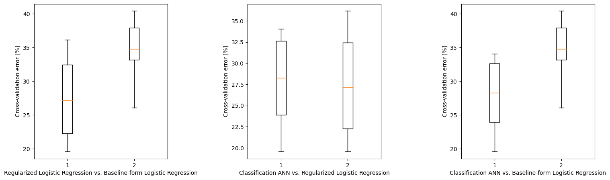
gen_error_regularized_logreg = np.sum(logreg_test_error_k1) / len(logreg_test_error_k1)
# gen_error_tree = np.sum(tree_test_error_k1) / len(tree_test_error_k1)
gen_error_ann = np.sum(ann_test_error_k1) / len(ann_test_error_k1)
gen_error_baseline_logreg = np.sum(baseline_test_error_k1) / len(baseline_test_error_k1)
print('Generalized error rate - regularized log-reg: {0}%'.format(np.round(100 * gen_error_regularized_logreg, decimals = 2)))
# print('Generalized error rate - depth-controlled classification tree: {0}%'.format(np.round(100 * gen_error_tree, decimals = 2)))
print('Generalized error rate - classification ANN: {0}%'.format(np.round(100 * gen_error_ann, decimals = 2)))
print('Generalized error rate - baseline log-reg: {0}%'.format(np.round(100 * gen_error_baseline_logreg, decimals = 2)))Generalized error rate - regularized log-reg: 27.24%
Generalized error rate - classification ANN: 27.68%
Generalized error rate - baseline log-reg: 34.61%ANN and logisctic regression give promising results with a great accuracy of predictions.
raw_data = df.to_numpy()
attr_col = list(df.columns).index('chd')
cols = list(range(0, attr_col)) + list(range(attr_col + 1, len(df.columns)))
X = raw_data[:, cols]
y = raw_data[:, attr_col] # the 'target' column
attributeNames = list(df.columns[cols])
classLabels = raw_data[:, -1]
classNames = np.unique(classLabels)
N, M = X.shape
C = len(classNames)
X = stats.zscore(X)
log_model_with_reg = LogisticRegression(penalty='l2', C = 1/10.0, solver = 'lbfgs', fit_intercept = True) # remember to select the most-commonly found optimal lambda value
log_model_no_reg = LogisticRegression(solver = 'lbfgs', fit_intercept = True)
log_model_with_reg = log_model_with_reg.fit(X, y)
log_model_no_reg = log_model_no_reg.fit(X, y)
print('Weights for LogReg model with regularization:')
print('{:>20} {:>20}'.format('Intercept', str(np.round(log_model_with_reg.intercept_[0],3))))
for m in range(M):
print('{:>20} {:>20}'.format(attributeNames[m], str(np.round(log_model_with_reg.coef_[0][m],3))))
print()
print()
print('Weights for LogReg model without regularization:')
print('{:>20} {:>20}'.format('Intercept', str(np.round(log_model_no_reg.intercept_[0],3))))
for m in range(M):
print('{:>20} {:>20}'.format(attributeNames[m], str(np.round(log_model_no_reg.coef_[0][m],3))))Weights for LogReg model with regularization:
Intercept -0.832
sbp 0.132
tobacco 0.342
ldl 0.32
adiposity 0.134
famhist 0.41
typea 0.318
obesity -0.197
alcohol 0.006
age 0.556
Weights for LogReg model without regularization:
Intercept -0.873
sbp 0.133
tobacco 0.362
ldl 0.355
adiposity 0.143
famhist 0.451
typea 0.379
obesity -0.256
alcohol 0.003
age 0.647# Statistical comparison of models
# Compute confidence interval of z = zA-zB and p-value of Null hypothesis
alpha = 0.05
# ANN vs. regularized linear regression
z1 = (ann_test_error_k1 - logreg_test_error_k1)
CI1 = stats.t.interval(1-alpha, len(z1)-1, loc=np.mean(z1), scale=stats.sem(z1)) # Confidence interval
p1 = 2*stats.t.cdf(-np.abs( np.mean(z1) )/stats.sem(z1), df=len(z1)-1) # p-value
print('ANN vs. regularized linear regression')
print('Confidence interval:', CI1)
print('p-value:', p1)
print()
# ANN vs. baseline
z2 = (ann_test_error_k1 - baseline_test_error_k1)
CI2 = stats.t.interval(1-alpha, len(z2)-1, loc=np.mean(z2), scale=stats.sem(z2)) # Confidence interval
p2 = 2*stats.t.cdf(-np.abs( np.mean(z2) )/stats.sem(z2), df=len(z2)-1) # p-value
print('ANN vs. baseline')
print('Confidence interval:', CI2)
print('p-value:', p2)
print()
# regularized linear regression vs. baseline
z3 = (logreg_test_error_k1 - baseline_test_error_k1)
CI3 = stats.t.interval(1-alpha, len(z3)-1, loc=np.mean(z3), scale=stats.sem(z3)) # Confidence interval
p3 = 2*stats.t.cdf( -np.abs( np.mean(z3) )/stats.sem(z3), df=len(z3)-1) # p-value
print('Regularized linear regression vs. baseline')
print('Confidence interval:', CI3)
print('p-value:', p3)ANN vs. regularized linear regression
Confidence interval: (-0.009863390759518375, 0.018559042933431417)
p-value: 0.5063410363804055
ANN vs. baseline
Confidence interval: (-0.10361431267894713, -0.035053587413559774)
p-value: 0.001336672981066876
Regularized linear regression vs. baseline
Confidence interval: (-0.10040445833610023, -0.04695909393031971)
p-value: 0.00015190635545935752